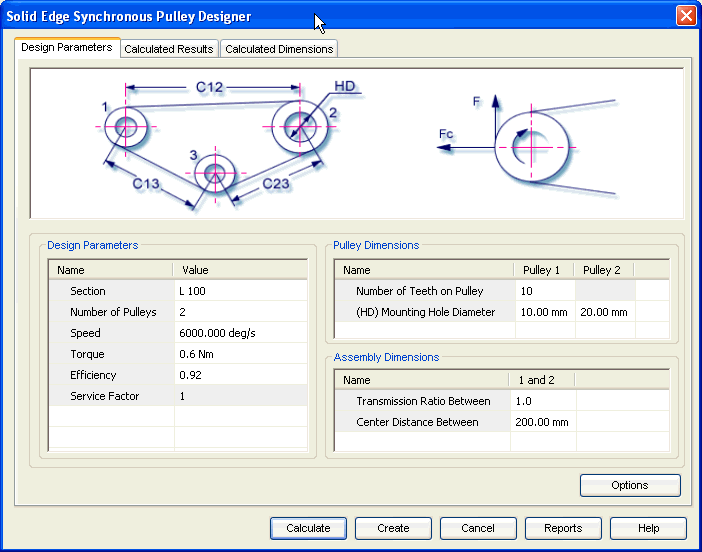

Synchronous Design Parameters tab
The Design Parameters tab provides the options you use to enter the details required for design of synchronous pulley.

Use this area to input parameters for design and strength calculations of synchronous belt. Section and number of pulleys are some of the important parameters that you provide through this area.
Use this area to define pulley related parameters. Number of teeth and Mounting diameter are the important parameters you provide through this area.
Use this area to define the assembly parameters of the pulleys. These parameters are used to constrain the pulleys space layout. Center distance and transmission ratio, between the pulleys are the important parameters you provide through this area.
Use the Options button to access the Input Conditions window and select the method of calculation for strength check. The inputs provided in the Design Parameters tab are based on the selections in the Input Conditions window.
Learn more
Synchronous Pulley moduleUsing the Synchronous Pulley module
Synchronous Pulley Calculated Dimensions tab
Synchronous Pulley tutorial
How to (Synchronous Pulleys)
Frequently asked questions (Synchronous Pulleys)
Standards used for Synchronous Pulley calculations